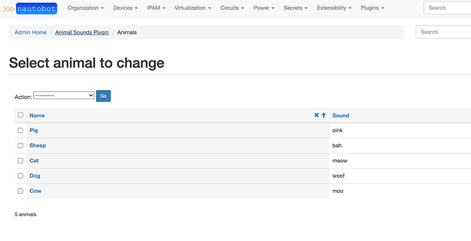

Plugin Development¶
This documentation covers the development of custom plugins for Nautobot. Plugins are essentially self-contained Django applications which integrate with Nautobot to provide custom functionality. Since the development of Django applications is already very well-documented, this will only be covering the aspects that are specific to Nautobot.
Plugins can do a lot of different things, all of which will be covered in detail in this document. Keep in mind that each piece of functionality is entirely optional. For example, if your plugin merely adds a piece of middleware or an API endpoint for existing data, there's no need to define any new models.
Tip
The plugin detail view (/plugins/installed-plugins/<plugin_name>/, accessible via Plugins -> Installed Plugins in the navigation menu, then selecting a specific plugin) provides in-depth information about which features any installed plugin is implementing or making use of.
Initial Setup¶
Use a Development Environment, Not Production For Plugin Development
You should not use your production environment for plugin development. For information on getting started with a development environment, check out Nautobot development guide.
Plugin Structure¶
Although the specific structure of a plugin is largely left to the discretion of its authors, a Nautobot plugin that makes use of all available plugin features described in this document could potentially look something like this:
plugin_name/
- plugin_name/
- __init__.py # required
- admin.py # Django Admin Interface
- api/
- serializers.py # REST API Model serializers
- urls.py # REST API URL patterns
- views.py # REST API view sets
- banner.py # Banners
- custom_validators.py # Custom Validators
- datasources.py # Loading Data from a Git Repository
- filter_extensions.py # Extending Filters
- filters.py # Filtersets for UI, REST API, and GraphQL Model Filtering
- forms.py # UI Forms and Filter Forms
- graphql/
- types.py # GraphQL Type Objects
- homepage.py # Home Page Content
- jinja_filters.py # Jinja Filters
- jobs.py # Job classes
- middleware.py # Request/response middleware
- migrations/
- 0001_initial.py # Database Models
- models.py # Database Models
- navigation.py # Navigation Menu Items
- secrets.py # Secret Providers
- signals.py # Signal Handler Functions
- template_content.py # Extending Core Templates
- templates/
- plugin_name/
- *.html # UI content templates
- urls.py # UI URL Patterns
- views.py # UI Views and any view override definitions
- pyproject.toml # *** REQUIRED *** - Project package definition
- README.md
The top level is the project root. Immediately within the root should exist several items:
pyproject.toml- This is the new unified Python project settings file that replacessetup.py,requirements.txt, and various other setup files (likesetup.cfg,MANIFEST.in, among others).README.md- A brief introduction to your plugin, how to install and configure it, where to find help, and any other pertinent information. It is recommended to write README files using a markup language such as Markdown.- The plugin source directory, with the same name as your plugin.
The plugin source directory contains all of the actual Python code and other resources used by your plugin. Its structure is left to the author's discretion, however it is recommended to follow best practices as outlined in the Django documentation. At a minimum, this directory must contain an __init__.py file containing an instance of Nautobot's PluginConfig class.
Note
Nautobot includes a command to help create the plugin directory:
nautobot-server startplugin [app_name]
Please see the Nautobot Server Guide for more information.
Create pyproject.toml¶
Poetry Init (Recommended)¶
To get started with a project using Python Poetry you use the poetry init command. This will guide you through the prompts necessary to generate a pyproject.toml with details required for packaging.
This command will guide you through creating your pyproject.toml config.
Package name [tmp]: nautobot-animal-sounds
Version [0.1.0]:
Description []: An example Nautobot plugin
Author [, n to skip]: Bob Jones
License []: Apache 2.0
Compatible Python versions [^3.8]: ^3.7
Would you like to define your main dependencies interactively? (yes/no) [yes] no
Would you like to define your development dependencies interactively? (yes/no) [yes] no
Generated file
[tool.poetry]
name = "nautobot-animal-sounds"
version = "0.1.0"
description = "An example Nautobot plugin"
authors = ["Bob Jones"]
license = "Apache 2.0"
[tool.poetry.dependencies]
python = "^3.7"
[tool.poetry.dev-dependencies]
[build-system]
requires = ["poetry-core>=1.0.0"]
build-backend = "poetry.core.masonry.api"
Do you confirm generation? (yes/no) [yes]
Define a PluginConfig¶
The PluginConfig class is a Nautobot-specific wrapper around Django's built-in AppConfig class. It is used to declare Nautobot plugin functionality within a Python package. Each plugin should provide its own subclass, defining its name, metadata, and default and required configuration parameters. An example is below:
from nautobot.extras.plugins import PluginConfig
class AnimalSoundsConfig(PluginConfig):
name = 'nautobot_animal_sounds'
verbose_name = 'Animal Sounds'
description = 'An example plugin for development purposes'
version = '0.1'
author = 'Bob Jones'
author_email = 'bob@example.com'
base_url = 'animal-sounds'
required_settings = []
default_settings = {
'loud': False
}
config = AnimalSoundsConfig
Nautobot looks for the config variable within a plugin's __init__.py to load its configuration. Typically, this will be set to the PluginConfig subclass, but you may wish to dynamically generate a PluginConfig class based on environment variables or other factors.
Required PluginConfig Attributes¶
| Name | Description |
|---|---|
author |
Name of plugin's author |
author_email |
Author's public email address |
description |
Brief description of the plugin's purpose |
name |
Raw plugin name; same as the plugin's source directory |
verbose_name |
Human-friendly name for the plugin |
version |
Current release (semantic versioning is encouraged) |
Optional PluginConfig Attributes¶
| Name | Default | Description |
|---|---|---|
base_url |
Same as specified name |
Base path to use for plugin URLs |
caching_config |
{"*":{"ops":"all"}} |
Plugin-specific query caching configuration |
config_view_name |
None |
URL name for a "configuration" view defined by this plugin |
default_settings |
{} |
A dictionary of configuration parameters and their default values |
home_view_name |
None |
URL name for a "home" or "dashboard" view defined by this plugin |
docs_view_name |
None |
URL name for a "documentation" view defined by this plugin |
installed_apps |
[] |
A list of additional Django application dependencies to automatically enable when the plugin is activated (you must still make sure these underlying dependent libraries are installed) |
max_version |
None |
Maximum version of Nautobot with which the plugin is compatible |
middleware |
[] |
A list of middleware classes to append after Nautobot's built-in middleware |
min_version |
None |
Minimum version of Nautobot with which the plugin is compatible |
required_settings |
[] |
A list of any configuration parameters that must be defined by the user |
Note
All required_settings must be configured in PLUGINS_CONFIG in nautobot_config.py before the plugin can be used.
Warning
If a configuration parameter is listed in both required_settings and default_settings, the default setting will be ignored.
PluginConfig Code Location Attributes¶
The following PluginConfig attributes can be configured to customize where Nautobot will look to locate various pieces of plugin code. In most cases you will not need to change these, but they are provided as options in case your plugin has a non-standard organizational structure.
Info
As used below, a "dotted path" is the combination of a Python module path within the plugin and the name of a variable within that module. For example, "template_content.template_extensions" refers to a variable named template_extensions inside a template_content module located at the root of the plugin.
| Name | Default | Description |
|---|---|---|
banner_function |
"banner.banner" |
Dotted path to a function that can render a custom banner |
custom_validators |
"custom_validators.custom_validators" |
Dotted path to a list of custom validator classes |
datasource_contents |
"datasources.datasource_contents" |
Dotted path to a list of datasource (Git, etc.) content types to register |
graphql_types |
graphql.types.graphql_types |
Dotted path to a list of GraphQL type classes |
homepage_layout |
"homepage.layout" |
Dotted path to a list of home page items provided by the plugin |
jinja_filters |
"jinja_filters" |
Path to a module that contains Jinja2 filters to be registered |
jobs |
"jobs.jobs" |
Dotted path to a list of Job classes |
menu_items |
"navigation.menu_items" |
Dotted path to a list of navigation menu items provided by the plugin |
secrets_providers |
"secrets.secrets_providers" |
Dotted path to a list of secrets providers in the plugin |
template_extensions |
"template_content.template_extensions" |
Dotted path to a list of template extension classes |
Install the Plugin for Development¶
The plugin needs to be installed into the same python environment where Nautobot is, so that we can get access to nautobot-server command, and also so that the nautobot-server is aware of the new plugin.
If you installed Nautobot using Poetry, then go to the root directory of your clone of the Nautobot repository and run poetry shell there. Afterward, return to the root directory of your plugin to continue development.
Otherwise if using the pip install or Docker workflows, manually activate nautobot using source /opt/nautobot/bin/activate.
To install the plugin for development the following steps should be taken:
- Activate the Nautobot virtual environment (as detailed above)
- Navigate to the project root, where the
pyproject.tomlfile exists for the plugin - Execute the command
poetry installto install the local package into the Nautobot virtual environment
Note
Poetry installs the current project and its dependencies in editable mode (aka "development mode").
This should be done in development environment
You should not use your production environment for plugin development. For information on getting started with a development environment, check out Nautobot development guide.
Once the plugin has been installed, add it to the plugin configuration for Nautobot:
Verify that the Plugin is Installed¶
In the Nautobot UI, navigate to Plugins -> Installed Plugins. The newly installed plugin should appear in the displayed table if everything is configured correctly. You can also click on the plugin's name in this table to view more detailed information about this plugin based on its PluginConfig and other contents.
Extending the Existing Nautobot UI¶
Extending Object Detail Views¶
Plugins can inject custom content into certain areas of the detail views of applicable models. This is accomplished by subclassing PluginTemplateExtension, designating a particular Nautobot model, and defining the desired methods to render custom content. Four methods are available:
left_page()- Inject content on the left side of the pageright_page()- Inject content on the right side of the pagefull_width_page()- Inject content across the entire bottom of the pagebuttons()- Add buttons to the top of the pagedetail_tabs()- Add extra tabs to the end of the list of tabs within the page tabs navigation
Additionally, a render() method is available for convenience. This method accepts the name of a template to render, and any additional context data you want to pass. Its use is optional, however.
When a PluginTemplateExtension is instantiated, context data is assigned to self.context. Available data include:
object- The object being viewedrequest- The current requestsettings- Global Nautobot settingsconfig- Plugin-specific configuration parameters
For example, accessing {{ request.user }} within a template will return the current user.
Declared subclasses should be gathered into a list or tuple for integration with Nautobot. By default, Nautobot looks for an iterable named template_extensions within a template_content.py file. (This can be overridden by setting template_extensions to a custom value on the plugin's PluginConfig.) An example is below.
# template_content.py
from django.urls import reverse
from nautobot.extras.plugins import PluginTemplateExtension
from .models import Animal
class SiteAnimalCount(PluginTemplateExtension):
"""Template extension to display animal count on the right side of the page."""
model = 'dcim.site'
def right_page(self):
return self.render('nautobot_animal_sounds/inc/animal_count.html', extra_context={
'animal_count': Animal.objects.count(),
})
class DeviceExtraTabs(PluginTemplateExtension):
"""Template extension to add extra tabs to the object detail tabs."""
model = 'dcim.device'
def detail_tabs(self):
"""
You may define extra tabs to render on a model's detail page by utilizing this method.
Each tab is defined as a dict in a list of dicts.
For each of the tabs defined:
- The <title> key's value will become the tab link's title.
- The <url> key's value is used to render the HTML link for the tab
These tabs will be visible (in this instance) on the Device model's detail page as
set by the DeviceContent.model attribute "dcim.device"
This example demonstrates defining two tabs. The tabs will be ordered by their position in list.
"""
return [
{
"title": "Plugin Tab 1",
"url": reverse("plugins:example_plugin:device_detail_tab_1", kwargs={"pk": self.context["object"].pk}),
},
{
"title": "Plugin Tab 2",
"url": reverse("plugins:example_plugin:device_detail_tab_2", kwargs={"pk": self.context["object"].pk}),
},
]
template_extensions = [DeviceExtraTabs, SiteAnimalCount]
Adding Extra Tabs¶
Added in version 1.4.0
In order for any extra tabs to work properly, the "url" key must reference a view which inherits from the nautobot.core.views.generic.ObjectView class and the template must extend the object's detail template such as:
<!-- example_plugin/tab_device_detail_1.html -->
{% extends 'dcim/device.html' %}
{% block content %}
<h2>Device Plugin Tab 1</h2>
<p>I am some content for the example plugin's device ({{ object.pk }}) detail tab 1.</p>
{% endblock %}
Here's a basic example of a tab's view
# views.py
from nautobot.core.views import generic
from nautobot.dcim.models import Device
class DeviceDetailPluginTabOne(generic.ObjectView):
"""
This view's template extends the device detail template,
making it suitable to show as a tab on the device detail page.
Views that are intended to be for an object detail tab's content rendering must
always inherit from nautobot.core.views.generic.ObjectView.
"""
queryset = Device.objects.all()
template_name = "example_plugin/tab_device_detail_1.html"
You must also add the view to the url_patterns like so (make sure to read the note after this code snippet):
# urls.py
from django.urls import path
from example_plugin import views
urlpatterns = [
# ... previously defined urls
path("devices/<uuid:pk>/example-plugin-tab-1/", views.DeviceDetailPluginTabOne.as_view(), name="device_detail_tab_1"),
]
Note
For added tab views, we recommend for consistency that you follow the URL pattern established by the base model detail view and tabs (if any). For example, nautobot/dcim/urls.py references Device tab views with the URL pattern devices/<uuid:pk>/TAB-NAME/, so above we have followed that same pattern.
Adding a Banner¶
Added in version 1.2.0
A plugin can provide a function that renders a custom banner on any number of Nautobot views. By default Nautobot looks for a function banner() inside of banner.py. (This can be overridden by setting banner_function to a custom value on the plugin's PluginConfig.)
This function currently receives a single argument, context, which is the Django request context in which the current page is being rendered. The function can return None if no banner is needed for a given page view, or can return a PluginBanner object describing the banner contents. Here's a simple example banner.py:
# banner.py
from django.utils.html import format_html
from nautobot.extras.choices import BannerClassChoices
from nautobot.extras.plugins import PluginBanner
def banner(context, *args, **kwargs):
"""Greet the user, if logged in."""
# Request parameters can be accessed via context.request
if not context.request.user.is_authenticated:
# No banner if the user isn't logged in
return None
else:
return PluginBanner(
content=format_html("Hello, <strong>{}</strong>! 👋", context.request.user),
banner_class=BannerClassChoices.CLASS_SUCCESS,
)
Adding Navigation Menu Items¶
Plugins can extend the existing navigation bar layout. By default, Nautobot looks for a menu_items list inside of navigation.py. (This can be overridden by setting menu_items to a custom value on the plugin's PluginConfig.)
Using a key and weight system, a developer can integrate the plugin's menu additions amongst existing menu tabs, groups, items and buttons, and/or create entirely new menus as desired.
More documentation and examples can be found in the Navigation Menu guide.
Tip
To reduce the amount of clutter in the navigation menu, if your plugin provides a "plugin configuration" view, we recommend linking it from the main "Installed Plugins" page rather than adding it as a separate item in the navigation menu.
Similarly, if your plugin provides a "plugin home" or "dashboard" view, consider linking it from the "Installed Plugins" page, and/or adding a link from the Nautobot home page (see below), rather than adding it to the navigation menu.
Adding Home Page Content¶
Added in version 1.2.0
Plugins can add content to the Nautobot home page. By default, Nautobot looks for a layout list inside of homepage.py. (This can be overridden by setting homepage_layout to a custom value on the plugin's PluginConfig.)
Using a key and weight system, a developer can integrate the plugin content amongst existing panels, groups, and items and/or create entirely new panels as desired.
More documentation and examples can be found in the guide on Home Page Panels.
Adding Links to the Installed Plugins View¶
Added in version 1.2.0
It's common for many plugins to provide a "plugin configuration" view used for interactive configuration of aspects of the plugin that don't necessarily need to be managed by a system administrator via PLUGINS_CONFIG. The PluginConfig setting of config_view_name lets you provide the URL pattern name defined for this view, which will then be accessible via a button on the Plugins -> Installed Plugins UI view.
For example, if the animal_sounds plugin provides a configuration view, which is set up in urls.py as follows:
# urls.py
from django.urls import path
from . import views
urlpatterns = [
path("configuration/", views.AnimalSoundsConfigView.as_view(), name="config"),
]
then in your AnimalSoundsConfig you could refer to the view by name:
# __init__.py
from nautobot.extras.plugins import PluginConfig
class AnimalSoundsConfig(PluginConfig):
# ...
config_view_name = "plugins:animal_sounds:config"
config = AnimalSoundsConfig
and now the "Configuration" button that appears in the Installed Plugins table next to "Animal Sounds" will be a link to your configuration view.
Similarly, if your plugin provides a "plugin home" or "dashboard" view, you can provide a link for the "Home" button in the Installed Plugins table by defining home_view_name on your PluginConfig class. This can also be done for documentation by defining docs_view_name on your PluginConfig class.
Extending Existing Functionality¶
Adding Jinja2 Filters¶
Added in version 1.1.0
Plugins can define custom Jinja2 filters to be used when rendering templates defined in computed fields. Check out the official Jinja2 documentation on how to create filter functions.
In the file that defines your filters (by default jinja_filters.py, but configurable in the PluginConfig if desired), you must import the library module from the django_jinja library. Filters must then be decorated with @library.filter. See an example below that defines a filter called leet_speak.
from django_jinja import library
@library.filter
def leet_speak(input_str):
charset = {"a": "4", "e": "3", "l": "1", "o": "0", "s": "5", "t": "7"}
output_str = ""
for char in input_str:
output_str += charset.get(char.lower(), char)
return output_str
This filter will then be available for use in computed field templates like so:
The output of this template results in the string "H3110 W0R1D".
Including Jobs¶
Plugins can provide Jobs to take advantage of all the built-in functionality provided by that feature (user input forms, background execution, results logging and reporting, etc.).
By default, for each plugin, Nautobot looks for an iterable named jobs within a jobs.py file. (This can be overridden by setting jobs to a custom value on the plugin's PluginConfig.) A brief example is below; for more details on Job design and implementation, refer to the Jobs feature documentation.
# jobs.py
from nautobot.extras.jobs import Job
class CreateDevices(Job):
...
class DeviceConnectionsReport(Job):
...
class DeviceIPsReport(Job):
...
jobs = [CreateDevices, DeviceConnectionsReport, DeviceIPsReport]
Implementing Custom Validators¶
Plugins can register custom validator classes which implement model validation logic to be executed during a model's clean() method. Like template extensions, custom validators are registered to a single model and offer a method which plugin authors override to implement their validation logic. This is accomplished by subclassing PluginCustomValidator and implementing the clean() method.
Plugin authors must raise django.core.exceptions.ValidationError within the clean() method to trigger validation error messages which are propagated to the user and prevent saving of the model instance. A convenience method validation_error() may be used to simplify this process. Raising a ValidationError is no different than vanilla Django, and the convenience method will simply pass the provided message through to the exception.
When a PluginCustomValidator is instantiated, the model instance is assigned to context dictionary using the object key, much like PluginTemplateExtensions. E.g. self.context['object'].
Declared subclasses should be gathered into a list or tuple for integration with Nautobot. By default, Nautobot looks for an iterable named custom_validators within a custom_validators.py file. (This can be overridden by setting custom_validators to a custom value on the plugin's PluginConfig.) An example is below.
# custom_validators.py
from nautobot.extras.plugins import PluginCustomValidator
class SiteValidator(PluginCustomValidator):
"""Custom validator for Sites to enforce that they must have a Region."""
model = 'dcim.site'
def clean(self):
if self.context['object'].region is None:
# Enforce that all sites must be assigned to a region
self.validation_error({
"region": "All sites must be assigned to a region"
})
custom_validators = [SiteValidator]
Loading Data from a Git Repository¶
It's possible for a plugin to register additional types of data that can be provided by a Git repository and be automatically notified when such a repository is refreshed with new data. By default, Nautobot looks for an iterable named datasource_contents within a datasources.py file. (This can be overridden by setting datasource_contents to a custom value on the plugin's PluginConfig.) An example is below.
# datasources.py
import yaml
import os
from nautobot.extras.choices import LogLevelChoices
from nautobot.extras.registry import DatasourceContent
from .models import Animal
def refresh_git_animals(repository_record, job_result, delete=False):
"""Callback for GitRepository updates - refresh Animals managed by it."""
if 'nautobot_animal_sounds.Animal' not in repository_record.provided_contents or delete:
# This repository is defined not to provide Animal records.
# In a more complete worked example, we might want to iterate over any
# Animals that might have been previously created by this GitRepository
# and ensure their deletion, but for now this is a no-op.
return
# We have decided that a Git repository can provide YAML files in a
# /animals/ directory at the repository root.
animal_path = os.path.join(repository_record.filesystem_path, 'animals')
for filename in os.listdir(animal_path):
with open(os.path.join(animal_path, filename)) as fd:
animal_data = yaml.safe_load(fd)
# Create or update an Animal record based on the provided data
animal_record, created = Animal.objects.update_or_create(
name=animal_data['name'],
defaults={'sound': animal_data['sound']}
)
# Record the outcome in the JobResult record
job_result.log(
"Successfully created/updated animal",
obj=animal_record,
level_choice=LogLevelChoices.LOG_SUCCESS,
grouping="animals",
)
# Register that Animal records can be loaded from a Git repository,
# and register the callback function used to do so
datasource_contents = [
(
'extras.gitrepository', # datasource class we are registering for
DatasourceContent(
name='animals', # human-readable name to display in the UI
content_identifier='nautobot_animal_sounds.animal', # internal slug to identify the data type
icon='mdi-paw', # Material Design Icons icon to use in UI
callback=refresh_git_animals, # callback function on GitRepository refresh
)
)
]
With this code, once your plugin is installed, the Git repository creation/editing UI will now include "Animals" as an option for the type(s) of data that a given repository may provide. If this option is selected for a given Git repository, your refresh_git_animals function will be automatically called when the repository is synced.
Populating Extensibility Features¶
Added in version 1.2.0
In many cases, a plugin may wish to make use of Nautobot's various extensibility features, such as custom fields or relationships. It can be useful for a plugin to automatically create a custom field definition or relationship definition as a consequence of being installed and activated, so that everyday usage of the plugin can rely upon these definitions to be present.
To make this possible, Nautobot provides a custom signal, nautobot_database_ready, that plugins can register to listen for. This signal is triggered when nautobot-server migrate or nautobot-server post_upgrade is run after installing a plugin, and provides an opportunity for the plugin to make any desired additions to the database at this time.
For example, maybe we want our plugin to make use of a Relationship allowing each Site to be linked to our Animal model. We would define our callback function that makes sure this Relationship exists, by convention in a signals.py file:
# signals.py
from nautobot.extras.choices import RelationshipTypeChoices
def create_site_to_animal_relationship(sender, apps, **kwargs):
"""Create a Site-to-Animal Relationship if it doesn't already exist."""
# Use apps.get_model to look up Nautobot core models
ContentType = apps.get_model("contenttypes", "ContentType")
Relationship = apps.get_model("extras", "Relationship")
Site = apps.get_model("dcim", "Site")
# Use sender.get_model to look up models from this plugin
Animal = sender.get_model("Animal")
# Ensure that the Relationship exists
Relationship.objects.update_or_create(
slug="site-favorite-animal",
defaults={
"name": "Site's Favorite Animal",
"type": RelationshipTypeChoices.TYPE_ONE_TO_MANY,
"source_type": ContentType.objects.get_for_model(Animal),
"source_label": "Sites that love this Animal",
"destination_type": ContentType.objects.get_for_model(Site),
"destination_label": "Favorite Animal",
},
)
Then, in the PluginConfig ready() function, we connect this callback function to the nautobot_database_ready signal:
# __init__.py
from nautobot.core.signals import nautobot_database_ready
from nautobot.extras.plugins import PluginConfig
from .signals import create_site_to_animal_relationship
class AnimalSoundsConfig(PluginConfig):
# ...
def ready(self):
super().ready()
nautobot_database_ready.connect(create_site_to_animal_relationship, sender=self)
config = AnimalSoundsConfig
After writing this code, run nautobot-server migrate or nautobot-server post_upgrade, then restart the Nautobot server, and you should see that this custom Relationship has now been automatically created.
Implementing Secrets Providers¶
A plugin can define and register additional providers (sources) for Secrets, allowing Nautobot to retrieve secret values from additional systems or data sources. By default, Nautobot looks for an iterable named secrets_providers within a secrets.py file. (This can be overridden by setting secrets_providers to a custom value on the plugin's PluginConfig.)
To define a new SecretsProvider subclass, we must specify the following:
- A unique
slugstring identifying this provider - A human-readable
namestring (optional; theslugwill be used if this is not specified) - A Django form for entering the parameters required by this provider, as an inner class named
ParametersForm - An implementation of the
get_value_for_secret()API to actually retrieve the value of a given secret
For a simple (insecure!) example, we could define a "constant-value" provider that simply stores a constant value in Nautobot itself and returns this value on demand.
Warning
This is an intentionally simplistic example and should not be used in practice! Sensitive secret data should never be stored directly in Nautobot's database itself.
# secrets.py
from nautobot.extras.secrets import SecretsProvider
class ConstantValueSecretsProvider(SecretsProvider):
"""
Example SecretsProvider - this one just returns a user-specified constant value.
Obviously this is insecure and not something you'd want to actually use!
"""
slug = "constant-value"
name = "Constant Value"
class ParametersForm(BootstrapMixin, forms.Form):
"""
User-friendly form for specifying the required parameters of this provider.
"""
constant = forms.CharField(
required=True,
help_text="Constant secret value. <strong>DO NOT USE FOR REAL DATA</strong>"
)
@classmethod
def get_value_for_secret(cls, secret, obj=None, **kwargs):
"""
Return the value defined in the Secret.parameters "constant" key.
A more realistic SecretsProvider would make calls to external APIs, etc.,
to retrieve a secret from another system as desired.
Args:
secret (nautobot.extras.models.Secret): The secret whose value should be retrieved.
obj (object): The object (Django model or similar) providing context for the secret's
parameters.
"""
return secret.rendered_parameters(obj=obj).get("constant")
secrets_providers = [ConstantValueSecretsProvider]
After installing and enabling your plugin, you should now be able to navigate to Secrets > Secrets and create a new Secret, at which point "constant-value" should now be available as a new secrets provider to use.
Extending Filters¶
Added in version 1.3.0
Plugins can extend any model-based FilterSet and FilterForm classes that are provided by the Nautobot core.
The requirements to extend a filter set or a filter form (or both) are:
- The file must be named
filter_extensions.py - The variable
filter_extensionsmust be declared in that file, and contain a list ofPluginFilterExtensionsubclasses - The
modelattribute of eachPluginFilterExtensionsubclass must be set to a valid model name in the dotted pair format ({app_label}.{model}, e.g.tenant.tenantordcim.device)
Nautobot dynamically creates many additional filters based upon the defined filter type. Specifically, there are additional lookup expressions (referred to in code as lookup_expr) that are created for each filter, when there is neither a lookup_expr nor method parameter already set. These dynamically-added lookup expressions are added using a shorthand notation (e.g. icontains is ic). Nautobot will also add the negation of each, for example, so icontains will be added along with not icontains using the ic and nic expressions respectively.
The dynamically-added lookup expressions can be found in the source code at nautobot/utilities/constants.py and the mapping logic can be found in nautobot/utilities/filters.py. Please see the documentation on filtering for more information.
Tip
For developers of plugins that define their own model filters, note that the above are added dynamically, as long as the class inherits from nautobot.utilities.filters.BaseFilterSet.
However, that does not cover every possible use case, to list a few examples:
- Usage of a custom
methodargument on a filter that points to aFilterSetmethod, which would allow arbitrary filtering using custom logic. This is how theqfield search logic is currently performed. - Creation of a filter on a field that does not currently have filtering support
- Convenience methods for highly nested fields
There are several conditions that must be met in order to extend a filter:
- The original FilterSet must follow the pattern:
f"{model.__name__}FilterSet"e.g.TenantFilterSet - The
PluginFilterExtension.filterset_fieldsattribute must be a valid dict, with each key being the filter name (which must start with the plugin'sname+_, e.g."example_plugin_description", not merely"description") and each value being a valid django-filter filter
Nautobot will dynamically generate the additional relevant lookup expressions of a plugin's defined custom FilterSet field, so no need to additionally register example_plugin_description__ic, etc.
Similar to FilterSet fields, Nautobot provides a default filter form for each model, however that does not cover every possible use case. To list a few examples of why one may want to extend a filter form:
- The base filter form does not include a custom filter defined by the plugin as described above
- The base filter form does not provide a specific lookup expression to a filterable field, such as allowing regex on name
There are several conditions that must be met in order to extend a filter:
- The original
FilterFormmust follow the pattern:f"{model.__name__}FilterForm", e.g.TenantFilterForm - The
filterform_fieldsattribute must be a valid dictionary of Django form fields
Note
A plugin is not required to define both filterset_fields and filterform_fields.
You can view an example of filter_extensions.py by viewing the one provided with the Example Plugin.
Tip
The method parameter, if used, must be a callable (method/function). Note that because filters with a method do their filtering in Python code rather than at the database level, performance of method filters is generally much poorer than pure-database filters. The method parameter is not supported when using Dynamic Groups.
Adding Database Models¶
If your plugin introduces a new type of object in Nautobot, you'll probably want to create a Django model for it. A model is essentially a Python representation of a database table, with attributes that represent individual columns. Model instances can be created, manipulated, and deleted using queries. Models must be defined within a file named models.py.
It is highly recommended to have plugin models inherit from at least nautobot.core.models.BaseModel which provides base functionality and convenience methods common to all models.
For more advanced usage, you may want to instead inherit from one of Nautobot's "generic" models derived from BaseModel -- nautobot.core.models.generics.OrganizationalModel or nautobot.core.models.generics.PrimaryModel. The inherent capabilities provided by inheriting from these various parent models differ as follows:
| Feature | django.db.models.Model |
BaseModel |
OrganizationalModel |
PrimaryModel |
|---|---|---|---|---|
| UUID primary key | ❌ | ✅ | ✅ | ✅ |
| Object permissions | ❌ | ✅ | ✅ | ✅ |
validated_save() |
❌ | ✅ | ✅ | ✅ |
| Change logging | ❌ | ❌ | ✅ | ✅ |
| Custom fields | ❌ | ❌ | ✅ | ✅ |
| Relationships | ❌ | ❌ | ✅ | ✅ |
| Note | ❌ | ❌ | ✅ | ✅ |
| Tags | ❌ | ❌ | ❌ | ✅ |
Note
When using OrganizationalModel or PrimaryModel, you also must use the @extras_features decorator to specify support for (at a minimum) the "custom_fields" and "relationships" features.
Below is an example models.py file containing a basic model with two character fields:
# models.py
from django.db import models
from nautobot.core.models import BaseModel
class Animal(BaseModel):
"""Base model for animals."""
name = models.CharField(max_length=50)
sound = models.CharField(max_length=50)
def __str__(self):
return self.name
Once you have defined the model(s) for your plugin, you'll need to create the database schema migrations. A migration file is essentially a set of instructions for manipulating the database to support your new model, or to alter existing models.
Creating migrations can be done automatically using the nautobot-server makemigrations <plugin_name> management command, where <plugin_name> is the name of the Python package for your plugin (e.g. animal_sounds):
Note
A plugin must be installed before it can be used with Django management commands. If you skipped this step above, run poetry install from the plugin's root directory.
$ nautobot-server makemigrations nautobot_animal_sounds
Migrations for 'nautobot_animal_sounds':
/home/bjones/animal_sounds/nautobot_animal_sounds/migrations/0001_initial.py
- Create model Animal
Next, apply the migration to the database with the nautobot-server migrate <plugin_name> command:
$ nautobot-server migrate nautobot_animal_sounds
Operations to perform:
Apply all migrations: nautobot_animal_sounds
Running migrations:
Applying nautobot_animal_sounds.0001_initial... OK
For more background on schema migrations, see the Django documentation.
Using the Django Admin Interface¶
Plugins can optionally expose their models via Django's built-in administrative interface. This can greatly improve troubleshooting ability, particularly during development. To expose a model, simply register it using Django's admin.register() function. An example admin.py file for the above model is shown below:
# admin.py
from nautobot.core.admin import NautobotModelAdmin
from .models import Animal
@admin.register(Animal)
class AnimalAdmin(NautobotModelAdmin):
list_display = ('name', 'sound')
This will display the plugin and its model in the admin UI. Staff users can create, change, and delete model instances via the admin UI without needing to create a custom view.

Integrating with GraphQL¶
Plugins can optionally expose their models via the GraphQL interface to allow the models to be part of the Graph and to be queried easily. There are two mutually exclusive ways to expose a model to the GraphQL interface.
- By using the
@extras_featuresdecorator - By creating your own GraphQL type definition and registering it within
graphql/types.pyof your plugin (the decorator should not be used in this case)
All GraphQL model types defined by your plugin, regardless of which method is chosen, will automatically support some built-in Nautobot features:
- Support for object permissions based on their associated
Modelclass - Include any custom fields defined for their
Model - Include any relationships defined for their
Model - Include tags, if the
Modelsupports them
Using the @extras_features Decorator for GraphQL¶
To expose a model via GraphQL, simply register it using the @extras_features("graphql") decorator. Nautobot will detect this and will automatically create a GraphQL type definition based on the model. Additionally, if a FilterSet is available at <app_name>.filters.<ModelName>FilterSet, Nautobot will automatically use the filterset to generate GraphQL filtering options for this type as well.
# models.py
from django.db import models
from nautobot.core.models import BaseModel
from nautobot.extras.utils import extras_features
@extras_features("graphql")
class Animal(BaseModel):
"""Base model for animals."""
name = models.CharField(max_length=50)
sound = models.CharField(max_length=50)
def __str__(self):
return self.name
Creating Your Own GraphQL Type Object¶
In some cases, such as when a model is using Generic Foreign Keys, or when a model has constructed fields that should also be reflected in GraphQL, the default GraphQL type definition generated by the @extras_features decorator may not work as the developer intends, and it will be preferable to provide custom GraphQL types.
By default, Nautobot looks for custom GraphQL types in an iterable named graphql_types within a graphql/types.py file. (This can be overridden by setting graphql_types to a custom value on the plugin's PluginConfig.) Each type defined in this way must be a class inheriting from graphene_django.DjangoObjectType or graphene_django_optimizer.OptimizedDjangoObjectType and must follow the standards defined by graphene-django.
Nautobot uses a library called graphene-django-optimizer to decrease the time queries take to process. By inheriting from graphene_django_optimizer type classes are automatically optimized.
Warning
When defining types this way, do not use the @extras_features("graphql") decorator on the corresponding Model class, as no auto-generated GraphQL type is desired for this model.
# graphql/types.py
import graphene_django_optimizer as gql_optimizer
from nautobot_animal_sounds.models import Animal
class AnimalType(gql_optimizer.OptimizedDjangoObjectType):
"""GraphQL Type for Animal"""
class Meta:
model = Animal
exclude = ["sound"]
graphql_types = [AnimalType]
Using GraphQL ORM Utilities¶
GraphQL utility functions:
execute_query(): Runs string as a query against GraphQL.execute_saved_query(): Execute a saved query from Nautobot database.
Both functions have the same arguments other than execute_saved_query() which requires a slug to identify the saved query rather than a string holding a query.
For authentication either a request object or user object needs to be passed in. If there is none, the function will error out.
Arguments:
execute_query():query(str): String with GraphQL query.variables(dict, optional): If the query has variables they need to be passed in as a dictionary.request(django.test.client.RequestFactory, optional): Used to authenticate.user(django.contrib.auth.models.User, optional): Used to authenticate.
execute_saved_query():saved_query_slug(str): Slug of a saved GraphQL query.variables(dict, optional): If the query has variables they need to be passed in as a dictionary.request(django.test.client.RequestFactory, optional): Used to authenticate.user(django.contrib.auth.models.User, optional): Used to authenticate.
Returned is a GraphQL object which holds the same data as returned from GraphiQL. Use execute_query().to_dict() to get the data back inside of a dictionary.
Adding Web UI Views¶
If your plugin needs its own page or pages in the Nautobot web UI, you'll need to define views. A view is a particular page tied to a URL within Nautobot, which renders content using a template. Views are typically defined in views.py, and URL patterns in urls.py. As an example, let's write a view which displays a random animal and the sound it makes. First, create the view in views.py:
# views.py
from django.shortcuts import render
from django.views.generic import View
from .models import Animal
class RandomAnimalView(View):
"""Display a randomly-selected Animal."""
def get(self, request):
animal = Animal.objects.order_by('?').first()
return render(request, 'nautobot_animal_sounds/animal.html', {
'animal': animal,
})
This view retrieves a random animal from the database and and passes it as a context variable when rendering a template named animal.html, which doesn't exist yet. To create this template, first create a directory named templates/nautobot_animal_sounds/ within the plugin source directory. (We use the plugin's name as a subdirectory to guard against naming collisions with other plugins.) Then, create a template named animal.html as described below.
Utilizing Nautobot Generic Views¶
Starting in Nautobot 1.1.0 via PR, some generic views have been exposed to help aid in plugin development. These views have some requirements that must be in place in order to work. These can be used by importing them from from nautobot.core.views import generic.
More documentation and examples can be found in Generic Views guide.
Extending the Base Template¶
Nautobot provides a base template to ensure a consistent user experience, which plugins can extend with their own content. This template includes four content blocks:
title- The page titleheader- The upper portion of the pagecontent- The main page bodyjavascript- A section at the end of the page for including Javascript code
For more information on how template blocks work, consult the Django documentation.
{# templates/nautobot_animal_sounds/animal.html #}
{% extends 'base.html' %}
{% block content %}
{% with config=settings.PLUGINS_CONFIG.nautobot_animal_sounds %}
<h2 class="text-center" style="margin-top: 200px">
{% if animal %}
The {{ animal.name|lower }} says
{% if config.loud %}
{{ animal.sound|upper }}!
{% else %}
{{ animal.sound }}
{% endif %}
{% else %}
No animals have been created yet!
{% endif %}
</h2>
{% endwith %}
{% endblock %}
The first line of the template instructs Django to extend the Nautobot base template and inject our custom content within its content block.
Note
Django renders templates with its own custom template language. This template language is very similar to Jinja2, however there are some important differences to keep in mind.
Registering URL Patterns¶
Finally, to make the view accessible to users, we need to register a URL for it. We do this in urls.py by defining a urlpatterns variable containing a list of paths.
# urls.py
from django.urls import path
from . import views
urlpatterns = [
path('random/', views.RandomAnimalView.as_view(), name='random_animal'),
]
A URL pattern has three components:
route- The unique portion of the URL dedicated to this viewview- The view itselfname- A short name used to identify the URL path internally
This makes our view accessible at the URL /plugins/animal-sounds/random/. (Remember, our AnimalSoundsConfig class sets our plugin's base URL to animal-sounds.) Viewing this URL should show the base Nautobot template with our custom content inside it.
Tip
As a next step, you would typically want to add links from the Nautobot UI to this view, either from the navigation menu, the Nautobot home page, and/or the Installed Plugins view.
NautobotUIViewSet¶
Added in version 1.4.0
New in Nautobot 1.4 is the debut of NautobotUIViewSet: A powerful plugin development tool that can save plugin developer hundreds of lines of code compared to using legacy generic.views. Using it to gain access to default functionalities previous provided by generic.views such as create(), bulk_create(), update(), partial_update(), bulk_update(), destroy(), bulk_destroy(), retrieve() and list() actions.
Note that this ViewSet is catered specifically to the UI, not the API.
Concrete examples on how to use NautobotUIViewSet resides in nautobot.circuits.views.
Below we provide an example on how to use NautobotUIViewSet on a theoretical plugin model.
from nautobot.core.views.viewsets import NautobotUIViewset
class YourPluginModelUIViewSet(NautobotUIViewSet):
bulk_create_form_class = YourPluginModelCSVForm
bulk_update_form_class = YourPluginModelBulkEditForm
filterset_class = YourPluginModelFilterSet
filterset_form_class = YourPluginModelFilterForm
form_class = YourPluginModelForm
queryset = YourPluginModel.objects.all()
serializer_class = serializers.YourPluginModelSerializer
table_class = YourPluginModelTable
Setting ViewSet Attributes¶
One caveat of using the NautobotUIViewSet is that the queryset, serializer_class and table_class attribute of the YourPluginModelUIViewSet has to be set before most of the NautobotUIViewSet functionalities will become available.
By default the URL patterns generated by a NautobotUIViewSet are based on the model's slug (/model-name/<slug>/ for the detail view, /model-name/<slug>/edit/ for the edit view, etc.). If your model lacks a slug field, or if you otherwise need to use a different field to look up an object, just override the default lookup_field in your ViewSet attributes:
from nautobot.core.views.viewsets import NautobotUIViewset
class YourPluginModelUIViewSet(NautobotUIViewSet):
...
lookup_field = "pk"
...
View Template Context¶
Templates can benefit from a very rich context passed down from the views and renderer, including forms, tables, as well as any other information that may be helpful for rendering templates. The keys it provides are as follows:
content_type: The ContentType object for the associated modelfilter_form: The FilterForm object for the associated modelform: A Form object for the associated model if relevant (Nonefor list and detail/retrieve views)object: An instance of the associated mode if available (Nonefor list and bulk operation views)permissions: Summary of user permissions for the given modelreturn_url: The relevant return URLtable: A Table object for the associated model if relevant (Nonefor detail/retrieve and update views)table_config_form: A TableConfigForm object for the associatedtable, providing the ability to customize the tableverbose_name: The singular form of the model's nameverbose_name_plural: The plural form of the model's name
An example from editing a Provider object:
{
'content_type': <ContentType: circuits | provider>,
'filter_form': <ProviderFilterForm bound=True, valid=Unknown, fields=(region;site;location;q;asn;tag)>,
'form': <ProviderForm bound=False, valid=Unknown, fields=(name;slug;asn;account;portal_url;noc_contact;admin_contact;comments;tags;object_note)>,
'object': <Provider: NautobotProvider>,
'permissions': {'add': True, 'change': True, 'delete': True, 'view': True},
'return_url': '/circuits/providers/nautobotprovider',
'table': None,
'table_config_form': None,
'verbose_name': 'provider',
'verbose_name_plural': 'providers'
}
Other context keys may be available for certain views:
editing: Provided for create and update views to help the template determine if this is a new or existing objectaction_buttons: Provided for the list view for the top of table buttons (such as "Add" and "Export")
You may see other context keys as well, but any not documented above should not be relied upon as they may be removed in a future release. Some examples of those are:
changelog_url: This can now be retrieved from the object itself, viaobject.get_changelog_url, if the object supports change-loggingobj: Please useobjectinsteadobj_type: Please useverbose_nameinsteadobj_type_plural: Please useverbose_name_pluralinstead
Excluding ViewMixins from NautobotUIViewSet¶
For plugin models that do not require certain views, simply inherit directly from the ViewMixins available in nautobot.core.views.mixins instead of NautobotUIViewSet.
Concrete examples for excluding ViewMixins, checkout CircuitTerminationUIViewSet and CircuitTypeUIViewSet in nautobot.circuits.views.
## A plugin model viewset that does not support bulk views and operations
from nautobot.core.views import mixins as view_mixins
class YourPluginModelUIViewSet(
view_mixins.ObjectListViewMixin,
view_mixins.ObjectDetailViewMixin,
view_mixins.ObjectEditViewMixin,
view_mixins.ObjectDestroyViewMixin,
):
filterset_class = YourPluginModelFilterSet
filterset_form_class = YourPluginModelFilterForm
form_class = YourPluginModelForm
queryset = YourPluginModel.objects.all()
serializer_class = serializers.YourPluginModelSerializer
table_class = YourPluginModelTable
# You do not need to specify attributes that are not needed.
Excluding unwanted urls from NautobotUIViewSetRouter is done for you at the ViewSet level. If you do not inherit the unwanted ViewMixins, the corresponding route from the router will not be published.
# urls.py
# All the urls correspond to BulkViewMixins will not be published when you register your ViewSet with the router.
router.register("yourpluginmodel", views.YourPluginModelUIViewSet)
Template Naming for NautobotUIViewSet¶
Template naming is very intuitive in NautobotUIViewSet. In templates/yourpluginmodel folder, name your templates following this convention {app_label}/{model_name}_{self.action}.html.
| ViewMixins | self.action |
|---|---|
| ObjectListViewMixin | list |
| ObjectDetailViewMixin | retrieve |
| ObjectEditViewMixin | create/update |
| ObjectDestroyViewMixin | destroy |
| ObjectBulkDestroyViewMixin | bulk_destroy |
| ObjectBulkCreateViewMixin | bulk_create |
| ObjectBulkUpdateViewMixin | bulk_update |
For example, for a DetailView template for YourPluginModel, the template name will be yourplugin/yourpluginmodel_retrieve.html, for a BulkCreateView template for yourpluginmodel, the template name will be yourplugin/yourpluginmodel_bulk_create.html and etc.
If you do not provide your own templates in the yourplugin/templates/yourplugin folder, NautobotUIViewSet will fall back to generic/object_{self.action}.html.
Since in many cases the create and update templates for a model will be identical, you are not required to create both. If you provide a {app_label}/{model_opts.model_name}_create.html file but not a {app_label}/{model_opts.model_name}_update.html file, then when you update an object, it will fall back to {app_label}/{model_opts.model_name}_create.html and vice versa.
NautobotUIViewSetRouter¶
With NautobotUIViewSet as the base UI ViewSet for YourPluginModel, it is required to register your urls with the help of NautobotUIViewSetRouter.
For a concrete example on how to use NautobotUIViewSetRouter, see nautobot.circuits.urls.
Below is a theoretical urls.py file for YourPluginModel:
from django.urls import path
from nautobot.core.views.routers import NautobotUIViewSetRouter
from nautobot.plugins import views
router = NautobotUIViewSetRouter()
router.register("yourpluginmodel", views.YourPluginModelUIViewSet)
urlpatterns = [
# Extra urls that do not follow the patterns of `NautobotUIViewSetRouter` go here.
# changelog, notes and etc.
...
path(
"yourpluginmodels/<slug:slug>/changelog/",
ObjectChangeLogView.as_view(),
name="yourpluginmodel_changelog",
kwargs={"model": yourpluginmodel},
),
path(
"yourpluginmodels/<slug:slug>/notes/",
ObjectNotesView.as_view(),
name="yourpluginmodel_notes",
kwargs={"model": yourpluginmodel},
),
...
]
urlpatterns += router.urls
Adding REST API Endpoints¶
Plugins can declare custom endpoints on Nautobot's REST API to retrieve or manipulate models or other data. These behave very similarly to views, except that instead of rendering arbitrary content using a template, data is returned in JSON format using a serializer. Nautobot uses the Django REST Framework, which makes writing API serializers and views very simple.
First, create a serializer for the Animal model, in api/serializers.py:
# api/serializers.py
from rest_framework.serializers import ModelSerializer
from nautobot_animal_sounds.models import Animal
class AnimalSerializer(ModelSerializer):
"""API serializer for interacting with Animal objects."""
class Meta:
model = Animal
fields = ('id', 'name', 'sound')
Next, create a generic API view set that allows basic CRUD (create, read, update, and delete) operations for Animal instances. This is defined in api/views.py:
# api/views.py
from rest_framework.viewsets import ModelViewSet
from nautobot_animal_sounds.models import Animal
from .serializers import AnimalSerializer
class AnimalViewSet(ModelViewSet):
"""API viewset for interacting with Animal objects."""
queryset = Animal.objects.all()
serializer_class = AnimalSerializer
Finally, register a URL for our endpoint in api/urls.py. This file must define a variable named urlpatterns.
# api/urls.py
from rest_framework import routers
from .views import AnimalViewSet
router = routers.DefaultRouter()
router.register('animals', AnimalViewSet)
urlpatterns = router.urls
With these three components in place, we can request /api/plugins/animal-sounds/animals/ to retrieve a list of all Animal objects defined.

Warning
This example is provided as a minimal reference implementation only. It does not address authentication, performance, or the myriad of other concerns that plugin authors should have.
Adding Help Documentation¶
If you are using the generic.ObjectEditView from Nautobot for your object, the form can automatically include a help icon with a link to that object's documentation. For this to happen, Nautobot must be able to find the documentation for this object in a specific directory tree within your plugin:
plugin_name/ # "nautobot_animal_sounds"
- static/
- plugin_name/ # "nautobot_animal_sounds"
- docs/
- index.html
- models/
- object_model.html # "animal.html"
Overriding Existing Functionality¶
Replacing Views¶
Added in version 1.4.0
You may override any of the core or plugin views by providing an override_views dict in a plugin's views.py file.
To override a view, you must specify the view's fully qualified name as the dict key which consists of the app name followed by the view's name separated by a colon, for instance dcim:device. The dict value should be the overriding view function.
A simple example to override the device detail view:
# views.py
from django.shortcuts import HttpResponse
from nautobot.core.views import generic
class DeviceViewOverride(generic.View):
def get(self, request, *args, **kwargs):
return HttpResponse(("Hello world! I'm a view which "
"overrides the device object detail view."))
override_views = {
"dcim:device": DeviceViewOverride.as_view(),
}
Note URL Endpoint¶
Added in version 1.4.0
Models that inherit from PrimaryModel and OrganizationalModel can have notes associated. In order to utilize this new feature you will need to add the endpoint to urls.py. Here is an option to be able to support both 1.4+ and older versions of Nautobot:
urlpatterns = [
path('random/', views.RandomAnimalView.as_view(), name='random_animal'),
]
try:
from nautobot.extras.views import ObjectNotesView
urlpatterns.append(
path(
'random/<slug:slug>/notes/),
ObjectNotesView.as_view(),
name="random_notes",
kwargs={"model": Random},
)
)
except ImportError:
pass